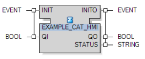
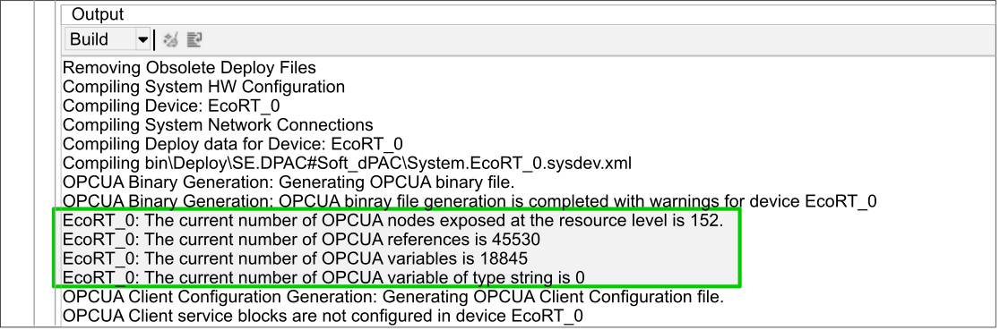

The EcoStruxure Automation Expert - Runtime system (EcoRT) includes an OPC Unified Architecture (OPC UA) server and client with the following availability depending on the devices:
| Devices | OPC UA Server is by default: | OPC UA Client is: |
|
M251d |
Enabled |
Not Available |
|
M262d |
Enabled |
Available |
|
M580d |
Enabled |
Not Available |
|
HA Soft dPAC |
Enabled |
Not Available |
|
Soft dPAC Linux |
Enabled |
Available |
|
Soft dPAC Windows |
Enabled1 |
Available only in not secured mode |
|
ATVd |
Disabled |
Not Available |
|
1. OPC UA Server security is enabled by default. This can block a Soft dPAC for Windows OPC UA Client when attempting to connect to an OPC UA Server. To enable the connection, set OPC UA Server Security to No Security. Refer to Configuring OPC UA Server Communication Security. |
||
The value of the OPC UA Server in each device can be manually modified to disabled or enabled.
OPC UA defines a comprehensive information model for publishing and managing meta-information, and a system context to simplify automation engineering and systems integration.
As implemented by the EcoRT OPC UA server, the OPC UA information model maps to the data structure of the IEC61499 application. In this way, the server can present OPC UA information in an object oriented, re-usable way that is consistent with the application design. OPC UA data is device-based, which means that each device presents its own OPC UA server and data model.
As implemented by EcoRT, the OPC UA server:
Supports OPC data access of monitored items by OPC UA clients, typically SCADA.
Performs OPC UA server-client communication via secure or non-secure TCP communication depending on the specific server security configuration.
Incorporates changes to data values so that OPC UA data is consistent with IEC61499 data, without the need to re-start the server.
The OPC UA server is enabled by default and remains available during runtime.
Refer to the topic OPC UA Server Editor for a description of how to configure OPC UA input and output variables to support OPC UA communication.
When communicating with an external OPC UA client, it is recommended that the OPC UA server be configured for secure communication. To do this:
In the editor, select the device hosting the external OPC UA client.
In the Properties pad for the selected device, navigate to then click the ellipsis (...) to open the OPCUA Server Security dialog.
In the Communication Security area, select one or more security polices the OPC UA server will support:
Basic256Sha256 - Sign
Basic256Sha256 - Sign and Encrypt
Aes256Sha256RsaPss - Sign
Aes256Sha256RsaPss - Sign and Encrypt
By default, all the above security policies are selected.
Your selections indicate the collection of security policies the external OPC UA can choose from. It is recommended that you specify a security policy whenever possible.
If you select :
No Security: data can be manipulated and read during transmission.
Sign (but not encrypt): helps protect against data manipulation, but transmitted data can be read.
Sign and Encrypt: helps protect against both data manipulation and reading transmitted data.
In the Authentication area, select User Authentication, so that a device connecting to the server will be required to provide username and password authentication criteria.
Anonymous, you need to set the device Authentication Mode to Anonymous.
User Authentication: you need to set device Authentication Mode to Custom Users and configure security for the device.
Click OK.
For EcoStruxure Automation Expert versions 21.2 and higher, before the OPC UA server can forward data to an OPC UA client or to an EcoStruxure Automation Expert HMI you need to configure the HMI block inside the CAT as follows:
Set the QI input to TRUE.
Generate the INIT event.

If this precondition is not met, an OPC UA client or an EcoStruxure Automation Expert HMI connected to EcoStruxure Automation Expert cannot access data from the CAT function block and will report a detected error.
As implemented by the EcoRT OPC UA server, overparameterization describes the ability to edit or override attributes of a data object at different levels of the data structure. For example, one instance of an object might present read-only access and a browse or display name of "input01", while a separate instance of the same object could present read-write access and an entirely different browse or display name.
The format of OPC UA server node identifiers can be configured.
To change the server node identifier format:
In the Solution Explorer, right click on the solution.
Select .
Select the Settings tab.
In the OPC UA Server section, choose:
Guid (the default) to use a globally unique identifier (GUID).
String (as Function Block path) to use a string. The string generated is the path of the function block instantiated within the device, for example: DEV1.RES0.FB1.Var1
Click Yes to confirm the change.
On the Deploy and Diagnostic window, recompile and redeploy any currently running devices to implement the change of format.
OPC UA client functionality is implemented by means of OPC UA client service function blocks, which are incorporated in the Service folder of the Standard.OPCUAClient library.
Refer to the topic OPC UA Client Editor for a description of how to enable and use the client service function blocks.
The OPC UA client function blocks include:
OPCUA_CONNECT: Establishes a connection to an OPC UA server.
OPCUA_READ: Reads a Value attribute of up to 32 variables. Reading mode can be cyclic or acyclic. In cyclic mode, this function block can poll the Value attribute of a node, and can read any attribute value by specifying the attribute ID for the attrib_id input. Supports all elementary data types and Value, Time, Quality (VTQ) types in IEC61499, but structures and arrays are not supported.
OPCUA_WRITE: Updates the Value attribute and converts the output value to the specified OPCUA_TYPE for up to 32 variables. Supports the elementary data types in IEC61499. Accepts VTQ input, provided the OPC UA server also supports VTQ input.
OPCUA_CALL: Invokes any method in the address space. Up to 32 input arguments of any elementary data types are supported. Up to 32 output arguments of any elementary types are supported.
OPCUA_MONITOR_EVENT: This function block:
Monitors alarms and events.
Supports OPC UA data access connections.
Supports method calls.
OPCUA_MONITOR_VALUE: Monitors changes in the Value of any attribute of any node in the address space. A dead band filter is applicable in case of monitoring Value attribute of analog variables.
For more detailed descriptions of each function block, refer to the documentation for the Standard.OPCUAClient library.
To configure OPC UA runtime properties:
Select the device or EcoRT object to configure in the Logical Devices editor of the System editor.
In the Properties window, expand the node.
Configure the runtime properties:
|
Option |
Default Value |
Description |
|---|---|---|
| OPCUA Server | ||
| Enable server |
true |
Disable (false) or enable (true) the OPC UA server for a device or EcoRT object. |
| Maximum number of elements |
Min: 1 Max: 200 Default: 30 |
Maximum number (integer) of variables exchanged for a given function block. Use it to limit the size of data exchanges. |
| Maximum number of variable nodes |
M251 dPAC: 300 M262 dPAC: 2000 M580 dPAC: 2000 Altivar ATV dPAC: 100 Soft dPAC: 25000
NOTE: Recommended value for Soft dPAC on Revo PI–based systems: 1000
|
The maximum number of variable nodes (tags) allowed in an OPC UA custom address space. |
| Additional number of reference nodes |
M251 dPAC: 1200 M262 dPAC: 8000 M580 dPAC: 8000 Altivar ATV dPAC: 400 Soft dPAC: 65535
NOTE: Recommended value for Soft dPAC on Revo PI–based systems: 1000
|
Additional number of reference nodes allowed in an OPC UA custom address space. |
| Maximum number of strings |
10000 |
Maximum number of strings allowed in an OPC UA string table. |
| Sampling rate |
500 |
Default sampling rate (in ms) of function block variables. For more information, refer to the Soft dPAC User Guide topic How to Speed Up OPC UA Communication |
| OPCUA Client | ||
| Enable Client |
true |
Disable (false) or enable (true) the OPC UA client for the device or EcoRT object. |
When performing a complete compile (that is, following a modification to the project or after running the Clean command) of the device or EcoRT object, information on the number of OPC UA tags generated is displayed in the Output window:

To configure the OPC UA stack:
Select the device or EcoRT object in the editor.
In the Properties window, expand the OPCUA Stack Configuration node and its sub-nodes.
Configure the following OPC UA stack properties:
|
Option |
Default Value |
Description |
||||
|---|---|---|---|---|---|---|
| Subscription | ||||||
| Number of subscriptions per session |
4 |
Maximum number of subscriptions allowed for each session. |
||||
| Number of monitored items per subscription |
Altivar ATV dPAC: 100 M251 dPAC: 200 M262 dPAC: 500 M580 dPAC: 3000 Soft dPAC: 40000 HA Soft dPAC: 40000 |
Maximum number of monitored items allowed for each session. |
||||
| Number of monitored items |
Soft dPAC: 40000 HA Soft dPAC: 40000 |
Maximum number of monitored items. |
||||
|
||||||
| Min. publishing interval |
Altivar ATV dPAC: 10 M251 dPAC: 500 M262 dPAC: 500 M580 dPAC: 500 Soft dPAC: 100 HA Soft dPAC: 100 |
Minimum supported publishing interval (in ms). |
||||
| Session | ||||||
| Number of sessions |
4 Altivar ATV dPAC: 4 M251 dPAC: 4 M262 dPAC: 10 M580 dPAC: 10 Soft dPAC: 10 HA Soft dPAC: 10 |
Maximum number of concurrent sessions allowed. |
||||
| Server Configuration | ||||||
| Security |
Secured |
Enable/disable security. Click the browse button to display the OPCUA Server Security dialog. Select the OPC UA communication security modes to support:
Choose the user authentication mode:
|
||||
| Server Port |
4840 |
Port number that OPC UA clients must append to the URL of the controller to connect to the OPC UA server. |
||||
| Endpoint URL |
opc.tcp://[hostname] |
OPC UA server URL. |
||||
| Client | ||||||
| Max. number of clients |
Altivar ATV dPAC: 4 M251 dPAC: 10 M262 dPAC: 10 M580 dPAC: 10 Soft dPAC: 10 HA Soft dPAC: 10 |
Maximum number of OPC UA client instances allowed. |
||||
| Number of subscriptions |
Altivar ATV dPAC: 4 M251 dPAC: 4 M262 dPAC: 10 M580 dPAC: 10 Soft dPAC: 10 HA Soft dPAC: 10 |
Maximum number of subscriptions allowed. |
||||
| Ns0 Configuration | ||||||
| add_references |
Soft dPAC: 1000 HA Soft dPAC: 1000 |
The additional number of OPC UA nodes that can be exposed at the root of the OPC UA server. |
||||
| CAUTION | |
|---|---|